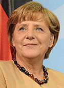
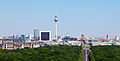
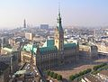

Germany
| Federal Republic of Germany
Bundesrepublik Deutschland
|
||||||
|---|---|---|---|---|---|---|
|
||||||
Motto:
|
||||||
Anthem:
 |
||||||
| Bundesadler |
||||||
|
Location of Germany (dark green)
– in Europe (green & dark grey) |
||||||
| Capital and largest city |
Berlin 52°31′N 13°23′E / 52.517°N 13.383°E |
|||||
| Official languages | German[1] | |||||
| Ethnic groups | ||||||
| Demonym | German | |||||
| Government | Federal parliamentary constitutional republic | |||||
| - | President | Joachim Gauck | ||||
| - | Chancellor | Angela Merkel | ||||
| - | President of the Bundestag | Norbert Lammert | ||||
| - | President of the Bundesrat | Winfried Kretschmann | ||||
| Legislature | ||||||
| - | Upper house | Bundesrat | ||||
| - | Lower house | Bundestag | ||||
| Formation | ||||||
| - | Holy Roman Empire | 2 February 962 | ||||
| - | Unification | 18 January 1871 | ||||
| - | Federal Republic | 23 May 1949 | ||||
| - | Reunification | 3 October 1990 | ||||
| Area | ||||||
| - | Total | 357,021 km2 (63rd) 137,847 sq mi |
||||
| - | Water (%) | 2.416 | ||||
| Population | ||||||
| - | 2012 estimate | 80,399,300[6] (16th) | ||||
| - | 2011 census | 80,219,695[7] (16th) | ||||
| - | Density | 225/km2 (58th) 583/sq mi |
||||
| GDP (PPP) | 2012 estimate | |||||
| - | Total | $3.197 trillion[8] (5th) | ||||
| - | Per capita | $39,028[8] (17th) | ||||
| GDP (nominal) | 2012 estimate | |||||
| - | Total | $3.401 trillion[8] (4th) | ||||
| - | Per capita | $41,513[8] (22nd) | ||||
| Gini (2011) | 29.0[9] low |
|||||
| HDI (2013) | 0.920[10] very high · 5th |
|||||
| Currency | Euro (€) (EUR) |
|||||
| Time zone | CET (UTC+1) | |||||
| - | Summer (DST) | CEST (UTC+2) | ||||
| Drives on the | right | |||||
| Calling code | +49 | |||||
| ISO 3166 code | DE | |||||
| Internet TLD | .de [2] | |||||
| a. | ^ Danish, Low German, Sorbian, Romany, and Frisian are officially recognised by the European Charter for Regional or Minority Languages (ECRML). | |||||
| b. | ^ The .eu domain is also used, as it is shared with other European Union member states. | |||||
Germany (i/ˈdʒɜrməni/; German: Deutschland), officially the Federal Republic of Germany (German: Bundesrepublik Deutschland, pronounced [ˈbʊndəsʁepuˌbliːk ˈdɔʏtʃlant] ( listen)),[11] is a federal parliamentary republic in western-central Europe. The country consists of 16 states and its capital and largest city is Berlin. Germany covers an area of 357,021 square kilometres (137,847 sq mi) and has a largely temperate seasonal climate. With 80.3 million inhabitants, it is the most populous member state in the European Union. Germany is the major economic and political power of the European continent and a historic leader in many theoretical and technical fields.
Germany is the world's fourth-largest economy by nominal GDP and the fifth-largest by purchasing power parity. As a global leader in several industrial and technological sectors, it is the second-largest exporter and third-largest importer of goods. The country ranks highly in many international metrics of performance, has developed a very high standard of living, and features a comprehensive social security system, which includes the world's oldest universal health care system. Known for its rich cultural and political history, Germany has been the home of many influential philosophers, music composers, scientists, and inventors.
In the Classical Era, what is now the Federal Republic of Germany and Austria was occupied by Balts, Celts, and others. The Germanic population was largely restricted to Scandinavia and various Baltic Sea islands. By the time they first entered the historical record in the 4th Century BC (in the writings of Pytheas), they had begun to migrate across the Baltic. Tribes such as the Goths and Winnili (later known as Lombards) displaced the Balts, and soon came to the attention of the expanding Roman Empire. A region named Germania, inhabited by several Germanic peoples, was documented before AD 100. During the Migration Period, the Germanic tribes expanded southward and established successor kingdoms throughout much of Europe.
Beginning in the 10th century, German territories formed a central part of the Holy Roman Empire.[12] During the 16th century, northern German regions became the centre of the Protestant Reformation while southern and western areas (most notably Bavaria) remained dominated by Roman Catholicism, with the two factions clashing in the Thirty Years' War, marking the beginning of the Catholic–Protestant divide that has characterised German society ever since.[13] Occupied during the Napoleonic Wars, the rise of Pan-Germanism inside the German Confederation resulted in the unification of most of the German states in 1871 into the German Empire, which was dominated by Prussia.
After the German Revolution of 1918–1919 and the subsequent military surrender in World War I, the Empire was replaced by the parliamentary Weimar Republic in 1918, with some of its territory partitioned in the Treaty of Versailles. Despite its lead in many scientific and cultural fields at this time, Germany endured significant economic and political instability, which intensified during the Great Depression and contributed to the establishment of the Third Reich in 1933. The subsequent rise of fascism lead to World War II, which devastated the country and much of Europe. Following the war's end in 1945, Germany was divided by allied occupation and evolved into two states, East Germany and West Germany, which were at the centre of the Cold War. In 1990, amidst the dissolution of the Soviet Union, the country was reunified.
Germany was a founding member of the European Community in 1957, which became the EU in 1993. It is part of the Schengen Area, and has been a member of the euro area since 1999. Germany is considered a great power in regional and global affairs, and is a member of several international institutions, including the United Nations, NATO, the G8, the G20, the OECD and the Council of Europe. It took a non-permanent seat on the UN Security Council for the 2011–2012 term.
Contents
[hide]Etymology
The English word Germany derives from the Latin Germania, which came into use after Julius Caesar adopted it for the peoples east of the Rhine.[14] The German term Deutschland (originally diutisciu land, "the German lands") is derived from deutsch, descended from Old High German diutisc "popular" (i.e. belonging to the diot or diota "people"), originally used to distinguish the language of the common people from Latin and its Romance descendants. This in turn descends from Proto-Germanic *þiudiskaz "popular" (see also the Latinised form Theodiscus), derived from *þeudō, descended from Proto-Indo-European *tewtéh₂- "people".[15]
History
Germanic tribes and Frankish Empire
The Germanic tribes are thought to date from the Nordic Bronze Age or the Pre-Roman Iron Age. From southern Scandinavia and north Germany, they expanded south, east and west from the 1st century BC, coming into contact with the Celtic tribes of Gaul as well as Iranian, Baltic, and Slavic tribes in Central and Eastern Europe.[16] Under Augustus, the Roman General Publius Quinctilius Varus began to invade Germania (an area extending roughly from the Rhine to the Ural Mountains). In AD 9, three Roman legions led by Varus were defeated by the Cheruscan leader Arminius. By AD 100, when Tacitus wrote Germania, Germanic tribes had settled along the Rhine and the Danube (the Limes Germanicus), occupying most of the area of modern Germany; Austria, southern Bavaria and the western Rhineland, however, were Roman provinces.[17]
In the 3rd century a number of large West Germanic tribes emerged: Alemanni, Franks, Chatti, Saxons, Frisii, Sicambri, and Thuringii. Around 260, the Germanic peoples broke into Roman-controlled lands.[18] After the invasion of the Huns in 375, and with the decline of Rome from 395, Germanic tribes moved further south-west. Simultaneously several large tribes formed in what is now Germany and displaced the smaller Germanic tribes. Large areas (known since the Merovingian period as Austrasia) were occupied by the Franks, and Northern Germany was ruled by the Saxons and Slavs.[17]
Holy Roman Empire
On 25 December 800, the Frankish king Charlemagne was crowned emperor and founded the Carolingian Empire, which was divided in 843.[19] The Holy Roman Empire resulted from the eastern portion of this division. Its territory stretched from the Eider River in the north to the Mediterranean coast in the south.[19] Under the reign of the Ottonian emperors (919–1024), several major duchies were consolidated, and the German king was crowned Holy Roman Emperor of these regions in 962. The Holy Roman Empire absorbed northern Italy and Burgundy under the reign of the Salian emperors (1024–1125), although the emperors lost power through the Investiture Controversy.
Under the Hohenstaufen emperors (1138–1254), the German princes increased their influence further south and east into territories inhabited by Slavs, preceding German settlement in these areas and further east (Ostsiedlung). Northern German towns grew prosperous as members of the Hanseatic League.[20] Starting with the Great Famine in 1315, then the Black Death of 1348–50, the population of Germany plummeted.[21] The edict of the Golden Bull in 1356 provided the basic constitution of the empire and codified the election of the emperor by seven prince-electors who ruled some of the most powerful principalities and archbishoprics.[22]
Martin Luther publicised The Ninety-Five Theses in 1517 in Wittenberg, challenging the Roman Catholic Church and initiating the Protestant Reformation. A separate Lutheran church became the official religion in many German states after 1530. Religious conflict led to the Thirty Years' War (1618–1648), which devastated German lands.[23] The population of the German states was reduced by about 30%.[24] The Peace of Westphalia (1648) ended religious warfare among the German states, but the empire was de facto divided into numerous independent principalities. In the 18th century, the Holy Roman Empire consisted of approximately 1,800 such territories.[25]
From 1740 onwards, dualism between the Austrian Habsburg Monarchy and the Kingdom of Prussia dominated German history. In 1806, the Imperium was overrun and dissolved as a result of the Napoleonic Wars.[26]
German Confederation and Empire
Following the fall of Napoleon, the Congress of Vienna convened in 1814 and founded the German Confederation (Deutscher Bund), a loose league of 39 sovereign states. Disagreement with restoration politics partly led to the rise of liberal movements, followed by new measures of repression by Austrian statesman Metternich. The Zollverein, a tariff union, furthered economic unity in the German states.[27] National and liberal ideals of the French Revolution gained increasing support among many, especially young, Germans. In the light of a series of revolutionary movements in Europe, which established a republic in France, intellectuals and commoners started the Revolutions of 1848 in the German states. King Frederick William IV of Prussia was offered the title of Emperor, but with a loss of power; he rejected the crown and the proposed constitution, leading to a temporary setback for the movement.[28]
Conflict between King William I of Prussia and the increasingly liberal parliament erupted over military reforms in 1862, and the king appointed Otto von Bismarck the new Minister President of Prussia. Bismarck successfully waged war on Denmark in 1864. Prussian victory in the Austro-Prussian War of 1866 enabled him to create the North German Confederation (Norddeutscher Bund) and to exclude Austria, formerly the leading German state, from the federation's affairs. After the French defeat in the Franco-Prussian War, the German Empire was proclaimed in 1871 in Versailles, uniting all scattered parts of Germany except Austria (Kleindeutschland, or "Lesser Germany").
With almost two-thirds of its territory and population, Prussia was the dominating constituent of the new state; the Hohenzollern King of Prussia ruled as its concurrent Emperor, and Berlin became its capital.[28] In the Gründerzeit period following the unification of Germany, Bismarck's foreign policy as Chancellor of Germany under Emperor William I secured Germany's position as a great nation by forging alliances, isolating France by diplomatic means, and avoiding war. Under Wilhelm II, however, Germany, like other European powers, took an imperialistic course leading to friction with neighbouring countries. As a result of the Berlin Conference in 1884 Germany claimed several colonies including German East Africa, German South-West Africa, Togo, and Cameroon.[29] Most alliances in which Germany had previously been involved were not renewed, and new alliances excluded the country.[30]
The assassination of Austria's crown prince on 28 June 1914 triggered World War I. Germany, as part of the Central Powers, suffered defeat against the Allies in one of the bloodiest conflicts of all time. An estimated two million German soldiers died in World War I.[31] The German Revolution broke out in November 1918, and Emperor Wilhelm II and all German ruling princes abdicated. An armistice ended the war on 11 November, and Germany was forced to sign the Treaty of Versailles in June 1919. The treaty was perceived in Germany as a humiliating continuation of the war, and is often cited as an influence in the rise of Nazism.[32]
Weimar Republic and Nazi Regime
At the beginning of the German Revolution in November 1918, Germany was declared a republic. However, the struggle for power continued, with radical-left Communists seizing power in Bavaria. The revolution came to an end on 11 August 1919, when the democratic Weimar Constitution was signed by President Friedrich Ebert.[34] An era of increasing national confidence, a very liberal cultural life and decade of economic prosperity followed - known as the Golden Twenties. Suffering from the Great Depression of 1929, the harsh peace conditions dictated by the Treaty of Versailles, and a long succession of unstable governments, Germans increasingly lacked identification with the government in the early 1930s. This was exacerbated by a widespread right-wing Dolchstoßlegende, or stab-in-the-back legend, which argued that Germany had lost World War I because of those who wanted to overthrow the government. The Weimar government was accused of betraying Germany by signing the Versailles Treaty.
By 1932, the German Communist Party and the Nazi Party controlled the majority of Parliament, fuelled by discontent with the Weimar government. After a series of unsuccessful cabinets, President Paul von Hindenburg appointed Adolf Hitler as Chancellor of Germany on 30 January 1933.[35] On 27 February 1933 the Reichstag building went up in flames, and a consequent emergency decree abrogated basic citizens' rights. An enabling act passed in parliament gave Hitler unrestricted legislative power. Only the Social Democratic Party voted against it, while Communist MPs had already been imprisoned.[36][37] Using his powers to crush any actual or potential resistance, Hitler established a centralised totalitarian state within months. Industry was revitalised with a focus on military rearmament.[38]
In 1935, Germany reacquired control of the Saar and in 1936 military control of the Rhineland, both of which had been lost in the Treaty of Versailles.[39] In 1938, Austria was annexed, and in 1939, Czechoslovakia was brought under German control. The invasion of Poland was prepared through the Molotov–Ribbentrop pact and Operation Himmler. On 1 September 1939 the German Wehrmacht launched a blitzkrieg on Poland, which was swiftly occupied by Germany and by the Soviet Red Army. The UK and France declared war on Germany, marking the beginning of World War II.[40] As the war progressed, Germany and its allies quickly gained control of most of continental Europe and North Africa, though plans to force the United Kingdom to an armistice or surrender failed. On 22 June 1941, Germany broke the Molotov–Ribbentrop pact and invaded the Soviet Union. Japan's attack on Pearl Harbor led Germany to declare war on the United States. The Battle of Stalingrad forced the German army to retreat on the Eastern front.[40]
In September 1943, Germany's ally Italy surrendered, and German troops were forced to defend an additional front in Italy. D-Day opened a Western front, as Allied forces advanced towards German territory. On 8 May 1945, the German armed forces surrendered after the Red Army occupied Berlin.[41]
In what later became known as The Holocaust, the Third Reich regime had enacted policies directly subjugating many dissidents and minorities. Millions of people were murdered by the Nazis during the Holocaust, including several million Jews, Romani people, Slavic people, Soviet POWs, people with mental and/or physical disabilities, Jehovah's Witnesses, homosexuals, and members of the political and religious opposition.[42] World War II was responsible for more than 40 million dead in Europe.[43] The war casualties for Germany are estimated at 5.3 million German soldiers,[44] millions of German civilians;[45][46] and losing the war resulted in large territorial losses; the expulsion of about 15 million ethnic Germans from former eastern territories of Germany and other formerly occupied European countries; mass rape of German women;[47] and the destruction of numerous major cities. The Nuremberg trials of Nazi war criminals were held after World War II.[48]
East and West Germany
After the surrender of Germany, the remaining German territory and Berlin were partitioned by the Allies into four military occupation zones. Together, these zones accepted more than 6.5 million of the ethnic Germans expelled from eastern areas.[49] The western sectors, controlled by France, the United Kingdom, and the United States, were merged on 23 May 1949 to form the Federal Republic of Germany (Bundesrepublik Deutschland); on 7 October 1949, the Soviet Zone became the German Democratic Republic (Deutsche Demokratische Republik, or DDR). They were informally known as "West Germany" and "East Germany". East Germany selected East Berlin as its capital, while West Germany chose Bonn as a provisional capital, to emphasise its stance that the two-state solution was an artificial and temporary status quo.[50]
West Germany, established as a federal parliamentary republic with a "social market economy", was allied with the United States, the UK and France. The country enjoyed prolonged economic growth beginning in the early 1950s (Wirtschaftswunder). West Germany joined NATO in 1955 and was a founding member of the European Economic Community in 1957. East Germany was an Eastern Bloc state under political and military control by the USSR via the latter's occupation forces and the Warsaw Pact. Though East Germany claimed to be a democracy, political power was exercised solely by leading members (Politbüro) of the communist-controlled Socialist Unity Party of Germany (SED), supported by the Stasi, an immense secret service,[51] and a variety of sub-organisations controlling every aspect of society. A Soviet-style command economy was set up; the GDR later became a Comecon state.[52]
While East German propaganda was based on the benefits of the GDR's social programmes and the alleged constant threat of a West German invasion, many of her citizens looked to the West for freedom and prosperity.[53] The Berlin Wall, built in 1961 to stop East Germans from escaping to West Germany, became a symbol of the Cold War,[28] hence its fall in 1989, following democratic reforms in Poland and Hungary, became a symbol of the Fall of Communism, German Reunification and Die Wende.
Tensions between East and West Germany were reduced in the early 1970s by Chancellor Willy Brandt's Ostpolitik. In summer 1989, Hungary decided to dismantle the Iron Curtain and open the borders, causing the emigration of thousands of East Germans to West Germany via Hungary. This had devastating effects on the GDR, where regular mass demonstrations received increasing support. The East German authorities unexpectedly eased the border restrictions, allowing East German citizens to travel to the West; originally intended to help retain East Germany as a state, the opening of the border actually led to an acceleration of the Wende reform process. This culminated in the Two Plus Four Treaty a year later on 12 September 1990, under which the four occupying powers renounced their rights under the Instrument of Surrender, and Germany regained full sovereignty. This permitted German reunification on 3 October 1990, with the accession of the five re-established states of the former GDR (new states or "neue Länder").[28]
German reunification and the EU
Based on the Berlin/Bonn Act, adopted on 10 March 1994, Berlin once again became the capital of the reunified Germany, while Bonn obtained the unique status of a Bundesstadt (federal city) retaining some federal ministries.[54] The relocation of the government was completed in 1999.[55] Since reunification, Germany has taken a more active role in the European Union and NATO. Germany sent a peacekeeping force to secure stability in the Balkans and sent a force of German troops to Afghanistan as part of a NATO effort to provide security in that country after the ousting of the Taliban.[56] These deployments were controversial since, after the war, Germany was bound by domestic law only to deploy troops for defence roles.[57] In 2005, Angela Merkel became the first female Chancellor of Germany as the leader of a grand coalition.[28] In 2009, a liberal-conservative coalition under Merkel assumed leadership of the country.
Geography
Germany is in Western and Central Europe, with Denmark bordering to the north, Poland and the Czech Republic to the east, Austria and Switzerland to the south, France and Luxembourg to the southwest, and Belgium and the Netherlands to the northwest. It lies mostly between latitudes 47° and 55° N (the tip of Sylt is just north of 55°), and longitudes 5° and 16° E. The territory covers 357,021 km2 (137,847 sq mi), consisting of 349,223 km2 (134,836 sq mi) of land and 7,798 km2 (3,011 sq mi) of water. It is the seventh largest country by area in Europe and the 62nd largest in the world.[1]
Elevation ranges from the mountains of the Alps (highest point: the Zugspitze at 2,962 metres or 9,718 feet) in the south to the shores of the North Sea (Nordsee) in the northwest and the Baltic Sea (Ostsee) in the northeast. The forested uplands of central Germany and the lowlands of northern Germany (lowest point: Wilstermarsch at 3.54 metres or 11.6 feet below sea level) are traversed by such major rivers as the Rhine, Danube and Elbe. Glaciers are found in the Alpine region, but are experiencing deglaciation. Significant natural resources are iron ore, coal, potash, timber, lignite, uranium, copper, natural gas, salt, nickel, arable land and water.[1]
Climate
Most of Germany has a temperate seasonal climate in which humid westerly winds predominate. The country is situated in between the oceanic Western European and the continental Eastern European climate. The climate is moderated by the North Atlantic Drift, the northern extension of the Gulf Stream. This warmer water affects the areas bordering the North Sea; consequently in the northwest and the north the climate is oceanic. Germany gets an average of 789 mm (31 in) precipitation per year. Rainfall occurs year-round, with no obligatory dry season. Winters are mild and summers tend to be warm, temperatures can exceed 30 °C (86 °F).[58]
The east has a more continental climate; winters can be very cold and summers very warm, and longer dry periods can occur. Central and southern Germany are transition regions which vary from moderately oceanic to continental. In addition to the maritime and continental climates that predominate over most of the country, the Alpine regions in the extreme south and, to a lesser degree, some areas of the Central German Uplands have a mountain climate, characterised by lower temperatures and greater precipitation.[58]
Biodiversity
The territory of Germany can be subdivided into two ecoregions: European-Mediterranean montane mixed forests and Northeast-Atlantic shelf marine.[59] As of 2008[update] the majority of Germany is covered by either arable land (34%) or forest and woodland (30.1%); only 13.4% of the area consists of permanent pastures, 11.8% is covered by settlements and streets.[60]
Plants and animals are those generally common to middle Europe. Beeches, oaks, and other deciduous trees constitute one-third of the forests; conifers are increasing as a result of reforestation. Spruce and fir trees predominate in the upper mountains, while pine and larch are found in sandy soil. There are many species of ferns, flowers, fungi, and mosses. Wild animals include deer, wild boar, mouflon, fox, badger, hare, and small numbers of beavers.[61] Germany's national flower is the blue cornflower.[62][63][64][65][66]
The 14 national parks in Germany include the Jasmund National Park, the Vorpommern Lagoon Area National Park, the Müritz National Park, the Wadden Sea National Parks, the Harz National Park, the Hainich National Park, the Saxon Switzerland National Park, the Bavarian Forest National Park and the Berchtesgaden National Park. In addition, there are 14 Biosphere Reserves, as well as 98 nature parks.
More than 400 registered zoos and animal parks operate in Germany, which is believed to be the largest number in any country.[67] The Berlin Zoo opened in 1844 is the oldest zoo in Germany, and presents the most comprehensive collection of species in the world.[68]
Politics
Germany is a federal, parliamentary, representative democratic republic. The German political system operates under a framework laid out in the 1949 constitutional document known as the Grundgesetz (Basic Law). Amendments generally require a two-thirds majority of both chambers of parliament; the fundamental principles of the constitution, as expressed in the articles guaranteeing human dignity, the separation of powers, the federal structure, and the rule of law are valid in perpetuity.[69]
The president is the head of state and invested primarily with representative responsibilities and powers. He is elected by the Bundesversammlung (federal convention), an institution consisting of the members of the Bundestag and an equal number of state delegates. The second-highest official in the German order of precedence is the Bundestagspräsident (President of the Bundestag), who is elected by the Bundestag and responsible for overseeing the daily sessions of the body.
|  | |
| Joachim Gauck President since 2012 |
Angela Merkel Chancellor since 2005 |
The third-highest official and the head of government is the Chancellor, who is appointed by the Bundespräsident after being elected by the Bundestag.[28] The chancellor, currently Angela Merkel, is the head of government and exercises executive power, similar to the role of a Prime Minister in other parliamentary democracies.
Federal legislative power is vested in the parliament consisting of the Bundestag (Federal Diet) and Bundesrat (Federal Council), which together form the legislative body. The Bundestag is elected through direct elections, by proportional representation (mixed-member).[1] The members of the Bundesrat represent the governments of the sixteen federated states and are members of the state cabinets.[28]
Since 1949, the party system has been dominated by the Christian Democratic Union and the Social Democratic Party of Germany. So far every chancellor has been a member of one of these parties. However, the smaller liberal Free Democratic Party (which has had members in the Bundestag since 1949) and the Alliance '90/The Greens (which has had seats in parliament since 1983) have also played important roles.[70]
Minor parties such as The Left, Free Voters and the Pirate Party are represented in some state parliaments.
Law
Germany has a civil law system based on Roman law with some references to Germanic law. The Bundesverfassungsgericht (Federal Constitutional Court) is the German Supreme Court responsible for constitutional matters, with power of judicial review.[28][71] Germany's supreme court system, called Oberste Gerichtshöfe des Bundes, is specialised: for civil and criminal cases, the highest court of appeal is the inquisitorial Federal Court of Justice, and for other affairs the courts are the Federal Labour Court, the Federal Social Court, the Federal Finance Court and the Federal Administrative Court. The Völkerstrafgesetzbuch regulates the consequences of crimes against humanity, genocide and war crimes, and gives German courts universal jurisdiction in some circumstances.[72]
Criminal and private laws are codified on the national level in the Strafgesetzbuch and the Bürgerliches Gesetzbuch respectively. The German penal system is aimed towards rehabilitation of the criminal and the protection of the general public.[73] Except for petty crimes, which are tried before a single professional judge, and serious political crimes, all charges are tried before mixed tribunals on which lay judges (Schöffen) sit side by side with professional judges.[74][75]
Many of the fundamental matters of administrative law remain in the jurisdiction of the states, though most states base their own laws in that area on the 1976 Verwaltungsverfahrensgesetz (Administrative Proceedings Act) covering important points of administrative law. The Oberverwaltungsgerichte are the highest level of administrative jurisdiction concerning the state administrations, unless the question of law concerns federal law or state law identical to federal law. In such cases, final appeal to the Federal Administrative Court is possible.
Constituent states
Germany comprises sixteen states which are collectively referred to as Länder.[76] Each state has its own state constitution[77] and is largely autonomous in regard to its internal organisation. Because of differences in size and population the subdivisions of these states vary, especially as between city states (Stadtstaaten) and states with larger territories (Flächenländer). For regional administrative purposes five states, namely Baden-Württemberg, Bavaria, Hesse, North Rhine-Westphalia and Saxony, consist of a total of 22 Government Districts (Regierungsbezirke). As of 2009[update] Germany is divided into 403 districts (Kreise) at a municipal level; these consist of 301 rural districts and 102 urban districts.[78]
|
Foreign relations
Germany has a network of 229 diplomatic missions abroad[79] and maintains relations with more than 190 countries.[80] As of 2011[update] it is the largest contributor to the budget of the European Union (providing 20%)[81] and the third largest contributor to the UN (providing 8%).[82] Germany is a member of NATO, the Organisation of Economic Co-operation and Development (OECD), the G8, the G20, the World Bank and the International Monetary Fund (IMF). It has played a leading role in the European Union since its inception and has maintained a strong alliance with France since the end of World War II. Germany seeks to advance the creation of a more unified European political, defence, and security apparatus.[83][84]
The development policy of the Federal Republic of Germany is an independent area of German foreign policy. It is formulated by the Federal Ministry for Economic Cooperation and Development (BMZ) and carried out by the implementing organisations. The German government sees development policy as a joint responsibility of the international community.[85] It is the world's third biggest aid donor after the United States and France.[86][87]
During the Cold War, Germany's partition by the Iron Curtain made it a symbol of East–West tensions and a political battleground in Europe. However, Willy Brandt's Ostpolitik was a key factor in the détente of the 1970s.[88] In 1999, Chancellor Gerhard Schröder's government defined a new basis for German foreign policy by taking part in the NATO decisions surrounding the Kosovo War and by sending German troops into combat for the first time since World War II.[89] The governments of Germany and the United States are close political allies.[28] The 1948 Marshall Plan and strong cultural ties have crafted a strong bond between the two countries, although Schröder's vocal opposition to the Iraq War suggested the end of Atlanticism and a relative cooling of German-American relations.[90] The two countries are also economically interdependent: 8.8% of German exports are US-bound and 6.6% of German imports originate from the US.[91]
Military
Germany's military, the Bundeswehr, is organised into Heer (Army), Marine (Navy), Luftwaffe (Air Force), Bundeswehr Joint Medical Service and Streitkräftebasis (Joint Support Service) branches. The role of the Bundeswehr is described in the Constitution of Germany (Art. 87a) as absolutely defensive only. Its only active role before 1990 was the Katastropheneinsatz (disaster control). Within the Bundeswehr, it helped after natural disasters both in Germany and abroad. After 1990, the international situation changed from East-West confrontation to one of general uncertainty and instability. Today, after a ruling of the Federal Constitutional Court in 1994 the term "defense" has been defined to not only include protection of the borders of Germany, but also crisis reaction and conflict prevention, or more broadly as guarding the security of Germany anywhere in the world.

In 2011[update], military spending was an estimated 1.3% of the country's GDP, which is low in a ranking of all countries; in absolute terms, German military expenditure is the 9th highest in the world.[92] In peacetime, the Bundeswehr is commanded by the Minister of Defence. If Germany went to war, which according to the constitution is allowed only for defensive purposes, the Chancellor would become commander-in-chief of the Bundeswehr.[93]
As of March 2012[update] the Bundeswehr employs 183,000 professional soldiers and 17,000 volunteers.[94] The German government plans to reduce the number of soldiers to 170,000 professionals and up to 15,000 short-term volunteers (voluntary military service).[95] Reservists are available to the Armed Forces and participate in defence exercises and deployments abroad.[95] As of April 2011[update], the German military had about 6,900 troops stationed in foreign countries as part of international peacekeeping forces, including about 4,900 Bundeswehr troops in the NATO-led ISAF force in Afghanistan and Uzbekistan, 1,150 German soldiers in Kosovo, and 300 troops with UNIFIL in Lebanon.[96]
Until 2011, military service was compulsory for men at age 18, and conscripts served six-month tours of duty; conscientious objectors could instead opt for an equal length of Zivildienst (civilian service), or a six-year commitment to (voluntary) emergency services like a fire department or the Red Cross. On 1 July 2011 conscription was officially suspended and replaced with a voluntary service.[97][98] Since 2001 women may serve in all functions of service without restriction, but they have not been subject to conscription. There are presently some 17,500 women on active duty and a number of female reservists.[99]
Economy
Germany has a social market economy with a highly skilled labour force, a large capital stock, a low level of corruption,[101] and a high level of innovation.[102] It has the largest and most powerful national economy in Europe, the fourth largest by nominal GDP in the world,[103] the fifth largest by PPP,[104] and was the biggest net contributor to the EU budget in 2011.[105] The service sector contributes approximately 71% of the total GDP, industry 28%, and agriculture 1%.[1] The official average national unemployment rate in June 2013 was 6.6%.[106] However, the official average national unemployment rate also includes people with a part-time job that are looking for a full-time job.[107] The unofficial average national unemployment rate in 2011 was 5.7%.[1]
Germany is an advocate of closer European economic and political integration. Its commercial policies are increasingly determined by agreements among European Union (EU) members and by EU legislation. Germany introduced the common European currency, the euro, on 1 January 2002.[108][109] Its monetary policy is set by the European Central Bank, which is headquartered in Frankfurt. Two decades after German reunification, standards of living and per capita incomes remain significantly higher in the states of the former West Germany than in the former East.[110] The modernisation and integration of the eastern German economy is a long-term process scheduled to last until the year 2019, with annual transfers from west to east amounting to roughly $80 billion.[111] In January 2009 the German government approved a €50 billion economic stimulus plan to protect several sectors from a downturn and a subsequent rise in unemployment rates.[112]
Of the world's 500 largest stock-market-listed companies measured by revenue in 2010, the Fortune Global 500, 37 are headquartered in Germany. 30 Germany-based companies are included in the DAX, the German stock market index. Well-known global brands are Mercedes-Benz, BMW, SAP, Siemens, Volkswagen, Adidas, Audi, Allianz, Porsche, Bayer, Bosch, and Nivea.[113] Germany is recognised for its specialised small and medium enterprises. Around 1,000 of these companies are global market leaders in their segment and are labelled hidden champions.[114]
The list includes the largest German companies by revenue in 2011:
| Rank[115] | Name | Headquarters | Revenue (Mil. €) |
Profit (Mil. €) |
Employees (World) |
|---|---|---|---|---|---|
| 1. | Volkswagen AG | Wolfsburg | 159.000 | 15.800 | 502.000 |
| 2. | E.ON SE | Düsseldorf | 113.000 | −1.900 | 79.000 |
| 3. | Daimler AG | Stuttgart | 107.000 | 6.000 | 271.000 |
| 4. | Siemens AG | Berlin, München | 74.000 | 6.300 | 360.000 |
| 5. | BASF SE | Ludwigshafen am Rhein | 73.000 | 6.600 | 111.000 |
| 6. | BMW AG | München | 69.000 | 4.900 | 100.000 |
| 7. | Metro AG | Düsseldorf | 67.000 | 740 | 288.000 |
| 8. | Schwarz-Gruppe (Lidl/Kaufland) | Neckarsulm | 63.000 | N/A | 315.000 |
| 9. | Deutsche Telekom AG | Bonn | 59.000 | 670 | 235.000 |
| 10. | Deutsche Post AG | Bonn | 53.000 | 1.300 | 471.000 |
| — | Allianz SE | München | 104.000 | 2.800 | 141.000 |
| — | Deutsche Bank AG | Frankfurt am Main | 2.160.000 | 4.300 | 101.000 |
Infrastructure
With its central position in Europe, Germany is a transport hub. This is reflected in its dense and modern transport networks. The motorway (Autobahn) network ranks as the third-largest worldwide in length and is known for its lack of a general speed limit.[116] Germany has established a polycentric network of high-speed trains. The InterCityExpress or ICE network of the Deutsche Bahn serves major German cities as well as destinations in neighbouring countries with speeds up to 300 kph (186 mph).[117] The largest German airports are Frankfurt Airport and Munich Airport, both hubs of Lufthansa, while Air Berlin has hubs at Berlin Tegel and Düsseldorf. Other major airports include Berlin Schönefeld, Hamburg, Cologne/Bonn and Leipzig/Halle. Both airports in Berlin will be consolidated at a site adjacent to Berlin Schönefeld, which will become Berlin Brandenburg Airport.[118]
In 2008[update], Germany was the world's sixth-largest consumer of energy,[119] and 60% of its primary energy was imported.[120] Government policy promotes energy conservation and renewable energy commercialisation. Energy efficiency has been improving since the early 1970s; the government aims to meet the country's electricity demands using 40% renewable sources by 2020 and 100% by 2050.[121] In 2010, energy sources were: oil (33.7%); coal, including lignite (22.9%); natural gas (21.8%); nuclear (10.8%); hydro-electric and wind power (1.5%); and other renewable sources (7.9%).[122] In 2000, the government and the nuclear power industry agreed to phase out all nuclear power plants by 2021.[123] Germany is committed to the Kyoto protocol and several other treaties promoting biodiversity, low emission standards, recycling, and the use of renewable energy, and supports sustainable development at a global level.[124] The German government has initiated wide-ranging emission reduction activities and the country's overall emissions are falling.[125] Nevertheless the country's greenhouse gas emissions were the highest in the EU in 2010[update].[126]
Science and technology

Germany's achievements in the sciences have been significant, and research and development efforts form an integral part of the economy.[127] The Nobel Prize has been awarded to 103 German laureates.[128] For most of the 20th century, German laureates had more awards than those of any other nation, especially in the sciences (physics, chemistry, and physiology or medicine).[129][130]
The work of Albert Einstein and Max Planck was crucial to the foundation of modern physics, which Werner Heisenberg and Max Born developed further.[131] They were preceded by such key physicists as Hermann von Helmholtz, Joseph von Fraunhofer and Gabriel Daniel Fahrenheit, among others. Wilhelm Röntgen discovered X-rays and was the first winner of the Nobel Prize in Physics in 1901.[132] Otto Hahn was a pioneer in the fields of radioactivity and radiochemistry and discovered nuclear fission,[133] while Ferdinand Cohn and Robert Koch were founders of microbiology. Numerous mathematicians were born in Germany, including Carl Friedrich Gauss, David Hilbert, Bernhard Riemann, Gottfried Leibniz, Karl Weierstrass, Hermann Weyl and Felix Klein. Research institutions in Germany include the Max Planck Society, the Helmholtz Association and the Fraunhofer Society. The Gottfried Wilhelm Leibniz Prize is granted to ten scientists and academics every year. With a maximum of €2.5 million per award it is one of highest endowed research prizes in the world.[134]
Germany has been the home of many famous inventors and engineers, such as Johannes Gutenberg, credited with the invention of movable type printing in Europe; Hans Geiger, the creator of the Geiger counter; and Konrad Zuse, who built the first fully automatic digital computer.[135] German inventors, engineers and industrialists such as Count Ferdinand von Zeppelin, Otto Lilienthal, Gottlieb Daimler, Rudolf Diesel, Hugo Junkers and Karl Benz helped shape modern automotive and air transportation technology.[136] Aerospace engineer Wernher von Braun developed the first space rocket and later on was a prominent member of NASA and developed the Saturn V Moon rocket, which paved the way for the success of the US Apollo programme. Heinrich Rudolf Hertz's work in the domain of electromagnetic radiation was pivotal to the development of modern telecommunication.[137]
Germany is one of the leading countries in developing and using green technologies. Companies specialising in green technology have an estimated turnover of €200 billion. Key sectors of Germany's green technology industry are power generation, sustainable mobility, material efficiency, energy efficiency, waste management and recycling, and sustainable water management.[138]
Demographics
With a population of 80.2 million according to the May 2011 census,[7] Germany is the most populous country in the European Union, the second most populous country in Europe after Russia, and ranks as the 16th most populous country in the world.[139] Its population density stands at 225 inhabitants per square kilometre. The overall life expectancy in Germany at birth is 80.19 years (77.93 years for males and 82.58 years for females).[1] The fertility rate of 1.41 children born per woman (2011 estimates), or 8.33 births per 1000 inhabitants, is one of the lowest in the world.[1] Since the 1970s, Germany's death rate has continuously exceeded its birth rate.[140] The Federal Statistical Office of Germany has forecast that the population could shrink to between 65 and 70 million by 2060 (depending on the level of net migration).[141] However, such forecasts have often been proven wrong in the past, and Germany is currently witnessing increased birth rates[142] and migration rates since the beginning of the 2010s. It is notably experiencing a strong increase in the number of well-educated migrants.[143][144] In 2012, 300,000 more immigrants than emigrants were reported in Germany.[145]
Germans by nationality make up 92.3% of the population of Germany.[7] As of 2011[update] and about six million foreign citizens (7.7% of the population) were registered in Germany.[7] Regarding ethnic background, 20%[2] of the country's residents, or more than 16 million people, were of foreign or partially foreign descent (including persons descending or partially descending from ethnic German repatriates), 96% of whom lived in the former West Germany or Berlin.[146] In 2010, 2.3 million families with children under 18 years were living in Germany, in which at least one parent had foreign roots. They represented 29% of the total of 8.1 million families with minor children. Compared with 2005 – the year when the microcensus started to collect detailed information on the population with a migrant background – the proportion of migrant families has risen by 2 percentage points.[147]
Most of the families with a migrant background live in the western part of Germany. In 2010, the proportion of migrant families in all families was 32% in the pre-unification territory of the Federal Republic. This figure was more than double that in the new Länder (including Berlin) where it stood at 15%.[147] Families with a migrant background more often have three or more minor children in the household than families without a migrant background. In 2010, about 15% of the families with a migrant background contained three or more minor children, as compared with just 9% of the families without a migrant background.[147]
The United Nations Population Fund lists Germany as host to the third-highest number of international migrants worldwide, about 5% or 10 million of all 191 million migrants.[148] As a consequence of restrictions to Germany's formerly rather unrestricted laws on asylum and immigration, the number of immigrants seeking asylum or claiming German ethnicity (mostly from the former Soviet Union) has been declining steadily since 2000.[149] In 2009, 20% of the population had immigrant roots, the highest since 1945.[150] As of 2008[update], the largest national group was from Turkey (2.5 million), followed by Italy (776,000) and Poland (687,000).[151] About 3 million "Aussiedler"—ethnic Germans, mainly from the former eastern bloc—have resettled in Germany since 1987.[152] Large numbers of people with full or significant German ancestry are found in the United States,[153] Brazil,[154] Argentina[155] and Canada.[156] Most ethnic minorities (especially those of non-European origin) reside in large urban areas like Berlin, Hamburg, Frankfurt Rhine-Main, Rhine-Ruhr, Rhine-Neckar and Munich. The percentage of non-Germans and immigrants is rather low in rural areas and small towns, especially in the East German states of the former GDR territory.
Ethnic groups in Germany
Germany is home to the third-highest number of international migrants worldwide.[157] Ethnic composition in 2010:
| Ethnic Group | %[158][159] | population [160] |
|---|---|---|
| European | 88.0 | 70,593,332 |
| Ethnic German | 80.7 | 64,737,294[161] |
| Polish | 2.0 | 1,604,394 |
| former Soviet Union (primarily Russian Germans, Russians and Jews) | 1.7 | 1,363,735 |
| European Other (Western Europeans and former Yugoslavians) | 3.6 | 2,887,909 |
| Middle Eastern | 5.2 | 4,171,424 |
| Turkish | 4.0 | 3,208,788 |
| others (primarily Arabs and Iranians) | 1.2 | 962,636 |
| Asian | 2.0 | 1,604,394 |
| Afro-German or Black African | 1.0 | 802,197 |
| Mixed or unspecified background | 2.0 | 1,604,394 |
| Other groups (primarily the Americas) | 1.8 | 1,443,955 |
| Total population | 100 | 80,219,695 |
Germany has a number of large cities. There are 11 officially recognised metropolitan regions in Germany – and since 2006, 34 potential cities were identified which can be called a Regiopolis. The largest conurbation is the Rhine-Ruhr region (11.7 million in 2008[update]), including Düsseldorf (the capital of North Rhine-Westphalia), Cologne, Bonn, Dortmund, Essen, Duisburg, and Bochum.[162]
|
Largest cities or towns of Germany List of statistical offices in Germany 24 December 2010 |
|||||||||
|---|---|---|---|---|---|---|---|---|---|
| Rank | City name | State | Pop. | Rank | City name | State | Pop. | ||
|  Berlin  Hamburg |
1 | Berlin | Berlin | 3,471,756 | 11 | Dresden | Saxony | 523,058 | Munich Cologne |
| 2 | Hamburg | Hamburg | 1,786,448 | 12 | Leipzig | Saxony | 522,883 | ||
| 3 | Munich | Bavaria | 1,353,186 | 13 | Hannover | Lower Saxony | 522,686 | ||
| 4 | Cologne | North Rhine-Westphalia | 1,007,119 | 14 | Nuremberg | Bavaria | 505,664 | ||
| 5 | Frankfurt | Hesse | 688,664 | 15 | Duisburg | North Rhine-Westphalia | 489,599 | ||
| 6 | Stuttgart | Baden-Württemberg | 606,588 | 16 | Bochum | North Rhine-Westphalia | 374,737 | ||
| 7 | Düsseldorf | North Rhine-Westphalia | 598,786 | 17 | Wuppertal | North Rhine-Westphalia | 349,721 | ||
| 8 | Dortmund | North Rhine-Westphalia | 580,444 | 18 | Bonn | North Rhine-Westphalia | 324,899 | ||
| 9 | Essen | North Rhine-Westphalia | 574,635 | 19 | Bielefeld | North Rhine-Westphalia | 323,270 | ||
| 10 | Bremen | Bremen (state) | 547,340 | 20 | Mannheim | Baden-Württemberg | 313,174 | ||
Religion
Christianity is the largest religion in Germany, with around 51.5 million adherents (62.8%) in 2008.[163] Relative to the whole population, 30.0% of Germans are Catholics, 29.9% are Protestants belonging to the Evangelical Church in Germany (EKD), and the remaining Christians belong to smaller denominations each with less than 0.5% of the German population.[164] Protestantism is concentrated in the north and east and Roman Catholicism is concentrated in the south and west;[13] 1.6% of the country's overall population declare themselves Orthodox Christians.[163]
The second largest religion is Islam with an estimated 3.8 to 4.3 million adherents (4.6% to 5.2%),[165] followed by Buddhism with 250,000 and Judaism with around 200,000 adherents (0.3%); Hinduism has some 90,000 adherents (0.1%). All other religious communities in Germany have fewer than 50,000 adherents.[166] Of the roughly 4 million Muslims, most are Sunnis and Alevites from Turkey, but there are a small number of Shi'ites and other denominations.[165] German Muslims, a large portion of whom are of Turkish origin, lack full official state recognition of their religious community.[13] Germany has Europe's third largest Jewish population (after France and the United Kingdom).[167] Approximately 50% of the Buddhists in Germany are Asian immigrants.[168]
Germans with no stated religious adherence make up 34.1% of the population and are concentrated in the former East Germany and major metropolitan areas.[164] German reunification in 1990 greatly increased the country's non-religious population, a legacy of the state atheism of the previously Soviet-controlled East. Christian church membership has decreased in recent decades, particularly among Protestants.[13]
Languages

German is the official and predominant spoken language in Germany.[170] It is one of 23 official languages in the European Union, and one of the three working languages of the European Commission.
Recognised native minority languages in Germany are Danish, Low German, Sorbian, Romany, and Frisian; they are officially protected by the European Charter for Regional or Minority Languages. The most used immigrant languages are Turkish, Kurdish, Polish, the Balkan languages, and Russian. 67% of German citizens claim to be able to communicate in at least one foreign language and 27% in at least two languages other than their own.[170]
Standard German is a West Germanic language and is closely related to and classified alongside English, Low German, Dutch, and the Frisian languages. To a lesser extent, it is also related to the East (extinct) and North Germanic languages. Most German vocabulary is derived from the Germanic branch of the Indo-European language family.[171] Significant minorities of words are derived from Latin and Greek, with a smaller amount from French and most recently English (known as Denglisch). German is written using the Latin alphabet. German dialects, traditional local varieties traced back to the Germanic tribes, are distinguished from varieties of standard German by their lexicon, phonology, and syntax.[172]
Education
Over 99% of Germans age 15 and above are estimated to be able to read and write.[1] Responsibility for educational supervision in Germany is primarily organised within the individual federal states. Since the 1960s, a reform movement attempted to unify secondary education in a Gesamtschule (comprehensive school); several West German states later simplified their school system to two or three tiers. A system of apprenticeship called Duale Ausbildung ("dual education") allows pupils in vocational training to learn in a company as well as in a state-run vocational school.[174] This successful model is highly regarded and reproduced all around the world.[175]
Optional kindergarten education is provided for all children between three and six years old, after which school attendance is compulsory for at least nine years. Primary education usually lasts for four to six years and public schools are not stratified at this stage.[174] In contrast, secondary education includes three traditional types of schools focused on different levels of academic ability: the Gymnasium enrols the most gifted children and prepares students for university studies; the Realschule for intermediate students lasts six years; the Hauptschule prepares pupils for vocational education.[176]

The general entrance requirement for university is Abitur, a qualification normally based on continuous assessment during the last few years at school and final examinations; however there are a number of exceptions, and precise requirements vary, depending on the state, the university and the subject. Germany's universities are recognised internationally; in the Academic Ranking of World Universities (ARWU) for 2008, six of the top 100 universities in the world are in Germany, and 18 of the top 200.[177] Most of the German universities are public institutions, charging tuition fees of only around €60 per semester (and up to €500 in the state of Niedersachsen) for each student.[178][179] Thus, academic education is open to most citizens and studying is increasingly common in Germany.[180] Although the dual education system, that combines practical and theoretical educations and does not lead to academic degrees, is typical for Germany and recognised as a role model for other countries.[181]
The oldest universities of Germany are also among the oldest and best regarded in the world, with Heidelberg University being the oldest (established in 1386 and in continuous operation since then). It is followed by Leipzig University (1409), Rostock University (1419), Greifswald University (1456), Freiburg University (1457), LMU Munich (1472) and the University of Tübingen (1477).
Most German universities focus more on teaching than on research. Research is mostly exhibited in independent institutes that are embedded in academic clusters, such as within Max Planck, Fraunhofer, Leibniz and Helmholtz institutes. This German specialisation is rarely reflected in academic rankings, which is the reason why German universities seem to be underperforming according to some of the ratings, such as ARWU. Some German universities are shifting their focus more towards research though, especially the institutes of technology.
Health
Germany has the world's oldest universal health care system, dating back to Bismarck's social legislation in 1883.[182] Currently the population is covered by a fairly comprehensive health insurance plan provided by statute. Certain groups of people (lifetime officials, self-employed persons, employees with high income) can opt out of the plan and switch to a private insurance contract. Previously, these groups could also choose to do without insurance, but this option was dropped in 2009.[183] According to the World Health Organization, Germany's health care system was 77% government-funded and 23% privately funded as of 2005[update].[184] In 2005, Germany spent 11% of its GDP on health care. Germany ranked 20th in the world in life expectancy with 77 years for men and 82 years for women, and it had a very low infant mortality rate (4 per 1,000 live births).[184]
In 2010[update], the principal cause of death was cardiovascular disease, at 41%, followed by malignant tumours, at 26%.[185] In 2008[update], about 82,000 Germans had been infected with HIV/AIDS and 26,000 had died from the disease (cumulatively, since 1982).[186] According to a 2005 survey, 27% of German adults are smokers.[186]
Culture
From its roots, culture in German states has been shaped by major intellectual and popular currents in Europe, both religious and secular. Historically Germany has been called Das Land der Dichter und Denker ("the land of poets and thinkers"),[187] because of the major role its famous writers and philosophers have played in the development of Western thought and culture.
The federated states are in charge of the cultural institutions. There are 240 subsidised theatres, hundreds of symphonic orchestras, thousands of museums and over 25,000 libraries spread in Germany. These cultural opportunities are enjoyed by many: there are over 91 million German museum visits every year; annually, 20 million go to theatres and operas; 3.6 million per year listen to the symphonic orchestras.[188] As of 2012 the UNESCO inscribed 37 properties in Germany on the World Heritage List.[189]
Germany has established a high level of gender equality,[190] promotes disability rights, and is legally and socially tolerant towards homosexuals. Gays and lesbians can legally adopt their partner's biological children, and civil unions have been permitted since 2001.[191] Germany has also changed its attitude towards immigrants; since the mid-1990s, the government and the majority of Germans have begun to acknowledge that controlled immigration should be allowed based on qualification standards.[192] Germany has been named the world's second most valued nation among 50 countries in 2010.[193] A global opinion poll for the BBC revealed that Germany is recognised for having the most positive influence in the world in 2011,[194] and for being the most positively viewed nation in the world, in 2013.[195]
Art
Numerous German painters have enjoyed international prestige through their work in diverse artistic styles. Albrecht Dürer, Hans Holbein the Younger, Matthias Grünewald and Lucas Cranach the Elder were important artists of the Renaissance, Peter Paul Rubens and Johann Baptist Zimmermann of Baroque, Caspar David Friedrich and Carl Spitzweg of Romanticism, Max Liebermann of Impressionism and Max Ernst of Surrealism.
Several German artist groups formed in the 20th century, such as the November Group or Die Brücke (The Bridge) and Der Blaue Reiter (The Blue Rider) in Expressionism. The New Objectivity arose as a counter-style to it during the Weimar Republic. After WWII, main movements of Neo-expressionism, performance art and Conceptual art evolved, with notable artists such as Joseph Beuys, Gerhard Richter, Jörg Immendorff, HA Schult, Aris Kalaizis, Neo Rauch (New Leipzig School) and Andreas Gursky (photography). Major art exhibitions and festivals in Germany are the documenta, transmediale and Art Cologne.
Music
| J.S. Bach Toccata und Fuge |
L.v. Beethoven Symphonie 5 c-moll |
R. Wagner Die Walküre |
|---|---|---|
|
|
|
|
German classical music comprises works by some of the world's most well-known composers, including Ludwig van Beethoven, Johann Sebastian Bach, Wolfgang Amadeus Mozart, Johannes Brahms, Richard Wagner and Richard Strauss.
Germany is the largest music market in Europe, and third largest in the world.[196] German popular music of the 20th and 21st century includes the movements of Neue Deutsche Welle (Nena, Alphaville), Ostrock (City, Keimzeit), Metal/Rock (Rammstein, Scorpions), Punk (Die Ärzte, Die Toten Hosen), Pop rock (Beatsteaks, Tokio Hotel), Indie (Tocotronic, Blumfeld) and Hip Hop (Die Fantastischen Vier, Deichkind). Especially the German Electronic music gained global influence, with Kraftwerk being a pioneer group in this genre,[197] and the Minimal and Techno scenes in Germany being very popular (e.g. Paul van Dyk, Tomcraft, Paul Kalkbrenner and Scooter).
Architecture
Architectural contributions from Germany include the Carolingian and Ottonian styles, which were precursors of Romanesque. Brick Gothic in medieval times and Brick Expressionism in modern times are two distinctive styles that developed in Germany. Also in Renaissance and Baroque art, regional and typically German elements evolved (e.g. Weser Renaissance and Dresden Baroque).
Germany is especially renowned for its timber frame old towns, with many well-kept examples to be found along the German Timber-Frame Road, leading from the very south of Germany to Northern Germany and its coasts.
When industrialisation spread across Europe, Classicism and a distinctive style of historism developed in Germany, sometimes referred to as Gründerzeit style, due to the economical boom years at the end of the 19th century. Resort architecture and Spa architecture are sub-styles, that evolved since the 18th century in Germany, with the first modern spas and Seaside resorts of Europe. Many architects formed this era, with Schinkel, Semper, von Gärtner, Schwechten and Lipsius among them.
Jugendstil became a dominant architectural style at the turn of the 19th to the 20th century, with a strong influence of the Art Nouveau movement.[198] The Art Deco movement did not gain much influence in Germany, instead the Expressionist architecture spread across the country, with e.g. Höger, Mendelsohn, Böhm and Schumacher being influential architects.
Germany was particularly important in the early modern movement - it is the home of the Bauhaus movement founded by Walter Gropius. And thus Germany is a cradle of modern architecture. Ludwig Mies van der Rohe became one of the world's most renowned architects in the second half of the 20th century. He conceived of the glass façade skyscraper.[199]
Renowned contemporary architects include Hans Kollhoff, Helmut Jahn, Behnisch, Albert Speer Junior, Frei Otto, Oswald Mathias Ungers, Gottfried Böhm, Stephan Braunfels and Anna Heringer.
Literature and philosophy
German literature can be traced back to the Middle Ages and the works of writers such as Walther von der Vogelweide and Wolfram von Eschenbach. Well-known German authors include Johann Wolfgang von Goethe, Friedrich Schiller, Gotthold Ephraim Lessing and Theodor Fontane. The collections of folk tales published by the Brothers Grimm popularised German folklore on an international level. Influential authors of the 20th century include Gerhart Hauptmann, Thomas Mann, Hermann Hesse, Heinrich Böll and Günter Grass.[200] German-speaking book publishers produce some 700 million books every year, with about 80,000 titles, nearly 60,000 of them new. Germany comes third in quantity of books published, after the English-speaking book market and the People's Republic of China.[201] The Frankfurt Book Fair is the most important in the world for international deals and trading, with a tradition spanning over 500 years.[202]
German philosophy is historically significant. Gottfried Leibniz's contributions to rationalism; the enlightenment philosophy by Immanuel Kant; the establishment of classical German idealism by Johann Gottlieb Fichte, Georg Wilhelm Friedrich Hegel and Friedrich Wilhelm Joseph Schelling; Arthur Schopenhauer's composition of metaphysical pessimism; the formulation of communist theory by Karl Marx and Friedrich Engels; Friedrich Nietzsche's development of perspectivism; Gottlob Frege's contributions to the dawn of analytic philosophy; Martin Heidegger's works on Being; and the development of the Frankfurt school by Max Horkheimer, Theodor Adorno, Herbert Marcuse and Jürgen Habermas have been particularly influential. In the 21st century, Germany has contributed to the development of contemporary analytic philosophy in continental Europe, along with France, Austria, Switzerland and the Scandinavian countries.[203]
Media
German cinema dates back to the earliest years of the medium, it has made major technical and artistic contributions to film, as with the work of Max Skladanowsky, who showed the first film sequences ever to an audience, in 1895. Early German cinema was particularly influential with German expressionists such as Robert Wiene and Friedrich Wilhelm Murnau. Director Fritz Lang's Metropolis (1927) is referred to as the first modern science-fiction film. In 1930 the Austrian-American Josef von Sternberg directed The Blue Angel, the first major German sound film.[205]
During the 1970s and 1980s, New German Cinema directors such as Volker Schlöndorff, Werner Herzog, Wim Wenders, and Rainer Werner Fassbinder put West German cinema on the international stage.[206] The annual European Film Awards ceremony is held every other year in Berlin, home of the European Film Academy (EFA); the Berlin Film Festival, held annually since 1951, is one of the world's foremost film festivals.[207]
In the 21st century, several German movies have had international success, such as Nowhere in Africa (2001), Das Experiment (2001), Good Bye, Lenin! (2003), Gegen die Wand (Head-On) (2004), Der Untergang (Downfall) (2004), Perfume (2006), The Baader Meinhof Complex (2008), The Wave (2008), The White Ribbon (2009), Pandorum (2009), Soul Kitchen (2009), Animals United (2010), Combat Girls (2011) and Cloud Atlas (2012). The Academy Award for Best Foreign Language Film went to the German production Die Blechtrommel (The Tin Drum) in 1979, to Nowhere in Africa in 2002, and to Das Leben der Anderen (The Lives of Others) in 2007.[208]
Germany's television market is the largest in Europe, with some 34 million TV households. Around 90% of German households have cable or satellite TV, with a variety of free-to-view public and commercial channels.[209] The most watched television broadcast of all-time in Germany was the Germany vs Spain semi-fnal game of the 2010 FIFA World Cup.[210] Nine out of ten of the top ten most watched television broadcasts of all-time in Germany feature the German national football team.
Cuisine
German cuisine varies from region to region. The southern regions of Bavaria and Swabia, for instance, share a culinary culture with Switzerland and Austria. In all regions, meat is often eaten in sausage form.[211] Organic food has gained a market share of ca. 2%, and is expected to increase further.[212] Although wine is becoming more popular in many parts of Germany, the national alcoholic drink is beer. German beer consumption per person is declining, but at 121.4 litres in 2009 it is still among the highest in the world.[213] The Michelin guide has awarded nine restaurants in Germany three stars, the highest designation, while 15 more received two stars.[214] German restaurants have become the world's second-most decorated after France.[215]
Pork, beef, and poultry are the main varieties of meat consumed in Germany, with pork being the most popular. The average person in Germany will consume up to 61 kg (130 lb) of meat in a year. Among poultry, chicken is most common, although duck, goose, and turkey are also enjoyed. Game meats, especially boar, rabbit, and venison are also widely available all year round. Trout is the most common freshwater fish on the German menu; pike, carp, and European perch also are listed frequently. Vegetables are often used in stews or vegetable soups, but are also served as side dishes. Carrots, turnips, spinach, peas, beans, broccoli and many types of cabbage are very common. A wide variety of cakes and tarts are served throughout the country, most commonly made with fresh fruit. Apples, plums, strawberries, and cherries are used regularly in cakes. Cheesecake is also very popular, often made with quark. Schwarzwälder Kirschtorte (Black Forest cake, made with cherries) is probably the most well-known example of a wide variety of typically German tortes filled with whipped or butter cream.
Sports
Twenty-seven million Germans are members of a sports club and an additional twelve million pursue sports individually.[216] Association football is the most popular sport. With more than 6.3 million official members, the German Football Association (Deutscher Fußball-Bund) is the largest sports organisation of its kind worldwide.[216] The Bundesliga, the top league of German football, is the most popular sports league in Germany and attracts the second highest average attendance of any professional sports league in the world.
The German national football team won the FIFA World Cup in 1954, 1974 and 1990 and the UEFA European Football Championship in 1972, 1980 and 1996. Germany hosted the FIFA World Cup in 1974 and 2006 and the UEFA European Football Championship in 1988. Among the most well-known footballers are Franz Beckenbauer, Gerd Müller, Jürgen Klinsmann, Lothar Matthäus, and Oliver Kahn. Other popular spectator sports include handball, volleyball, basketball, ice hockey, and tennis.[216]
Germany is one of the leading motor sports countries in the world. Constructors like BMW and Mercedes are prominent manufacturers in motor sport. Additionally, Porsche has won the 24 Hours of Le Mans, an annual endurance race held in France, 16 times, and Audi has won it 11 times. The Formula One driver Michael Schumacher has set many motor sport records during his career, having won more Formula One World Drivers' Championships and more Formula One races than any other driver; he is one of the highest paid sportsmen in history.[217]
Historically, German sportsmen have been successful contenders in the Olympic Games, ranking third in an all-time Olympic Games medal count, combining East and West German medals. In the 2008 Summer Olympics, Germany finished fifth in the medal count,[218] while in the 2006 Winter Olympics they finished first.[219] Germany has hosted the Summer Olympic Games twice, in Berlin in 1936 and in Munich in 1972. The Winter Olympic Games took place in Germany once in 1936 in the twin towns of Garmisch and Partenkirchen.
See also
- Index of Germany-related articles
- Outline of Germany
- Metropolitan regions in Germany
- List of cities in Germany by population
- List of cities and towns in Germany
References
- ^ a b c d e f g h i "World Factbook". CIA. Retrieved 26 March 2011.
- ^ a b Bevölkerung und Erwerbstätigkeit: Bevölkerung mit Migrationshintergrund – Ergebnisse des Mikrozensus 2010, p. 64 statistics
- ^ Germans without any migrant background
- ^ "Press releases - For the first time more than 16 million people with migration background in Germany". Federal Statistical Office (Destatis) - Destatis.de. 14 July 2010. Retrieved 4 November 2012.
- ^ "Pressemitteilungen - Ein Fünftel der Bevölkerung in Deutschland hatte 2010 einen Migrationshintergrund" (in (German)). Statistisches Bundesamt (Destatis) - Destatis.de. 26 September 2011. Retrieved 4 November 2012.
- ^ Statistisches Bundesamt: Bevölkerung auf Grundlage des Zensus 2011. Retrieved 22 June 2013.
- ^ a b c d Zensus 2011: Bevölkerung am 9. Mai 2011. Retrieved 1 June 2013.
- ^ a b c d "Germany". International Monetary Fund. April 2013. Retrieved 17 April 2013.
- ^ "Gini coefficient of equivalised disposable income (source: SILC)". Eurostat Data Explorer. Retrieved 13 August 2013.
- ^ "Human Development Report 2013". UN. 2013. Retrieved 14 March 2013.
- ^ Mangold, Max, ed. (1995). Duden, Aussprachewörterbuch (in German) (6th ed.). Dudenverlag. pp. 271, 53f. ISBN 978-3-411-20916-3.
- ^ The Latin name Sacrum Imperium (Holy Empire) is documented as far back as 1157. The Latin name Sacrum Romanum Imperium (Holy Roman Empire) was first documented in 1254. The full name "Holy Roman Empire of the German Nation" (Heiliges Römisches Reich Deutscher Nation) dates back to the 15th century.
Zippelius, Reinhold (2006) [1994]. Kleine deutsche Verfassungsgeschichte: vom frühen Mittelalter bis zur Gegenwart [Brief German Constitutional History: from the Early Middle Ages to the Present] (in German) (7th ed.). Munich: Beck. p. 25. ISBN 978-3-406-47638-9. - ^ a b c d "Germany". Berkley Center for Religion, Peace, and World Affairs. Retrieved 15 December 2011.
- ^ Schulze, Hagen (1998). Germany: A New History. Harvard University Press. p. 4. ISBN 0-674-80688-3.
- ^ Lloyd, Albert L.; Lühr, Rosemarie; Springer, Otto (1998). Etymologisches Wörterbuch des Althochdeutschen, Band II (in German). Göttingen: Vandenhoeck & Ruprecht. pp. 699–704. ISBN 3-525-20768-9. (for diutisc) Lloyd, Albert L.; Lühr, Rosemarie; Springer, Otto (1998). Etymologisches Wörterbuch des Althochdeutschen, Band II (in German). Göttingen: Vandenhoeck & Ruprecht. pp. 685–686. ISBN 3-525-20768-9. (for diot)
- ^ Claster, Jill N. (1982). Medieval Experience: 300–1400. New York University Press. p. 35. ISBN 0-8147-1381-5.
- ^ a b Fulbrook 1991, pp. 9–13.
- ^ Bowman, Alan K.; Garnsey, Peter; Cameron, Averil (2005). The crisis of empire, A.D. 193–337. The Cambridge Ancient History 12. Cambridge University Press. p. 442. ISBN 0-521-30199-8.
- ^ a b Fulbrook 1991, p. 11.
- ^ Fulbrook 1991, pp. 13–24.
- ^ Nelson, Lynn Harry. The Great Famine (1315–1317) and the Black Death (1346–1351). University of Kansas. Retrieved 19 March 2011.
- ^ Fulbrook 1991, p. 27.
- ^ Philpott, Daniel (January 2000). "The Religious Roots of Modern International Relations". World Politics 52 (2): 206–245. doi:10.1017/S0043887100002604.
- ^ Macfarlane, Alan (1997). The savage wars of peace: England, Japan and the Malthusian trap. Blackwell. p. 51. ISBN 978-0-631-18117-0.
- ^ Gagliardo, G., Reich and Nation, The Holy Roman Empire as Idea and Reality, 1763–1806, Indiana University Press, 1980, p. 12-13.
- ^ Fulbrook 1991, p. 97.
- ^ Henderson, W. O. (January 1934). "The Zollverein". History 19 (73): 1–19. doi:10.1111/j.1468-229X.1934.tb01791.x.
- ^ a b c d e f g h i "Germany". U.S. Department of State. 10 November 2010. Retrieved 26 March 2011.
- ^ Black, John, ed. (2005). 100 maps. Sterling Publishing. p. 202. ISBN 978-1-4027-2885-3.
- ^ Fulbrook 1991, pp. 135, 149.
- ^ Crossland, David (22 January 2008). "Last German World War I Veteran Believed to Have Died". Spiegel Online. Retrieved 25 March 2011.
- ^ Lee, Stephen J. (2003). Europe, 1890–1945. Routledge. p. 131. ISBN 978-0-415-25455-7.
- ^ Schmitz-Berning, Cornelia (1998 (2000 reprint)). "Führer, Der Führer". Vokabular des Nationalsozialismus. Berlin. pp. 240–245. Thamer, Hans-Ulrich (2003). "Beginn der nationalsozialistischen Herrschaft (Teil 2)". Nationalsozialismus I (in German). Bonn: Federal Agency for Civic Education. Retrieved 5 April 2012. "President von Hindenburg died on 2 August 1934. The day before, the cabinet had approved a submission making Hitler his successor. The office of the president was to be dissolved and united with that of the chancellor under the name "Führer und Reichskanzler". However, this was in breach of the Enabling Act (shortened & paraphrased)."
- ^ Fulbrook 1991, pp. 156–160.
- ^ Fulbrook 1991, pp. 155–158, 172–177.
- ^ "Das Ermächtigungsgesetz 1933" (in German). Deutsches Historisches Museum. Retrieved 25 March 2011.
- ^ Stackelberg, Roderick (1999). Hitler's Germany: Origins, interpretations, legacies. Routledge. p. 103. ISBN 978-0-415-20115-5.
- ^ "Industrie und Wirtschaft" (in German). Deutsches Historisches Museum. Retrieved 25 March 2011.
- ^ Fulbrook 1991, pp. 188–189.
- ^ a b Fulbrook 1991, pp. 190–195.
- ^ Steinberg, Heinz Günter (1991). Die Bevölkerungsentwicklung in Deutschland im Zweiten Weltkrieg: mit einem Überblick über die Entwicklung von 1945 bis 1990 (in German). Kulturstiftung der dt. Vertriebenen. ISBN 978-3-88557-089-9.
- ^ Niewyk, Donald L.; Nicosia, Francis R. (2000). The Columbia Guide to the Holocaust. Columbia University Press. pp. 45–52. ISBN 978-0-231-11200-0.
- ^ "Leaders mourn Soviet wartime dead". BBC News. 9 May 2005. Retrieved 18 March 2011.
- ^ Rűdiger Overmans. Deutsche militärische Verluste im Zweiten Weltkrieg. Oldenbourg 2000. ISBN 3-486-56531-1
- ^ Das Deutsche Reich und der Zweite Weltkrieg, Bd. 9/1, ISBN 3-421-06236-6. Page 460 (This study was prepared by the German Armed Forces Military History Research Office, an agency of the German government)
- ^ Bonn : Kulturstiftung der Deutschen Vertriebenen, Vertreibung und Vertreibungsverbrechen, 1945–1948 : Bericht des Bundesarchivs vom 28. Mai 1974 : Archivalien und ausgewählte Erlebnisberichte / [Redaktion, Silke Spieler]. Bonn :1989 ISBN 3-88557-067-X. (This is a study of German expulsion casualties due to "war crimes" prepared by the German government Archives)
- ^ Beevor, Antony (2003) [2002]. Berlin: The downfall 1945. Penguin. pp. 31–32, 409–412. ISBN 978-0-14-028696-0.
- ^ Overy, Richard (17 February 2011). "Nuremberg: Nazis on Trial". BBC History. Retrieved 25 March 2011.
- ^ Richard J. Evans, "The Other Horror, Review of Orderly and Humane: The Expulsion of the Germans After the Second World War, by R.M. Douglas", The New Republic, 25 June 2012. Retrieved 1 July 2012
- ^ Wise, Michael Z. (1998). Capital dilemma: Germany's search for a new architecture of democracy. Princeton Architectural Press. p. 23. ISBN 978-1-56898-134-5.
- ^ maw/dpa (11 March 2008). "New Study Finds More Stasi Spooks". Spiegel Online – english site (www.spiegel.de/international). Der Spiegel. Retrieved 30 October 2011. "189,000 people were informers for the Stasi – the former Communist secret police – when East Germany collapsed in 1989 – 15,000 more than previous studies had suggested. [...] about one in 20 members of the former East German Communist party, the SED, was a secret police informant."
- ^ Colchester, Nico (1 January 2001). "D-mark day dawns". Financial Times (London). Retrieved 19 March 2011.
- ^ Protzman, Ferdinand (22 August 1989). "Westward Tide of East Germans Is a Popular No-Confidence Vote". www.nytimes.com (The New York Times). Retrieved 30 October 2011. "Behind the mass flight, Western experts say, is widespread and deepening disillusionment with the Honecker leadership's policies, particularly the refusal to consider the type of economic and political changes taking place elsewhere in the Eastern Bloc."
- ^ "Gesetz zur Umsetzung des Beschlusses des Deutschen Bundestages vom 20. Juni 1991 zur Vollendung der Einheit Deutschlands" (in German). Bundesministerium der Justiz. 26 April 1994. Retrieved 19 April 2011.
- ^ "Brennpunkt: Hauptstadt-Umzug". Focus (in German) (Munich). 12 April 1999. Retrieved 19 March 2011.
- ^ Dempsey, Judy (31 October 2006). "Germany is planning a Bosnia withdrawal". International Herald Tribune (Paris). Retrieved 7 May 2011.
- ^ Merz, Sebastian (November 2007). "Still on the way to Afghanistan? Germany and its forces in the Hindu Kush" (PDF). Stockholm International Peace Research Institute. pp. 2, 3. Retrieved 16 April 2011.
- ^ a b "Climate in Germany". GermanCulture. Retrieved 26 March 2011.
- ^ "Terrestrial Ecoregions". WWF. Retrieved 19 March 2011.
- ^ Strohm, Kathrin (May 2010). "Arable farming in Germany". Agri benchmark. Retrieved 14 April 2011.
- ^ Bekker, Henk (2005). Adventure Guide Germany. Hunter. p. 14. ISBN 978-1-58843-503-3.
- ^ The Handy Science Answer Book: Cornflower. Carnegie Library of Pittsburgh. Retrieved 15 May 2013.
- ^ "Education & Advice: Cornflower". UK Game & Wildlife Conservation Trust. Retrieved 14 May 2013.
- ^ CORNFLOWER (Centaurea cyanus). Encyclopaedia Britannica, Volume 6. Retrieved 15 May 2013.
- ^ Taylor, Norman (1996). One Thousand One Questions Answered about Flowers. Constable and Company, London. p. 201.
- ^ Wernert, Susan J. (1998). Reader's Digest North American Wildlife. Reader's Digest Association. p. 462.
- ^ "Zoo Facts". Zoos and Aquariums of America. Retrieved 16 April 2011.
- ^ "Der Zoologische Garten Berlin" (in German). Zoo Berlin. Retrieved 19 March 2011.
- ^ "Basic Law for the Federal Republic of Germany". Deutscher Bundestag. Btg-bestellservice. October 2010. Retrieved 14 April 2011.
- ^ "Christian Democratic Union/Christian Social Union". U.S. Library of Congress. Retrieved 26 March 2011.
- ^ "Federal Constitutional Court". Bundesverfassungsgericht. Retrieved 26 March 2011.
- ^ "Völkerstrafgesetz Teil 1 Allgemeine Regelungen" (in German). Bundesministerium der Justiz. Retrieved 19 April 2011.
- ^ "§ 2 Strafvollzugsgesetz" (in German). Bundesministerium der Justiz. Retrieved 26 March 2011.
- ^ Jehle, Jörg-Martin; German Federal Ministry of Justice (2009). Criminal Justice in Germany. Forum-Verlag. p. 23. ISBN 978-3-936999-51-8.
- ^ Casper, Gerhard; Zeisel, Hans (January 1972). "Lay Judges in the German Criminal Courts". Journal of Legal Studies 1 (1): 141. JSTOR 724014.
- ^ The individual denomination is either Land [state], Freistaat [free state] or Freie (und) Hansestadt [free (and) Hanseatic city].
"The Federal States". www.bundesrat.de. Bundesrat of Germany. Retrieved 17 July 2011.
"Amtliche Bezeichnung der Bundesländer" [Official denomination of federated states] (PDF; download file "Englisch"). www.auswaertiges-amt.de (in German). Federal Foreign Office. Retrieved 22 October 2011. - ^ "Example for state constitution: "Constitution of the Land of North Rhine-Westphalia"". Landtag (state assembly) of North Rhine-Westphalia. Retrieved 17 July 2011.
- ^ "Kreisfreie Städte und Landkreise nach Fläche und Bevölkerung 31.12.2010" (XLS) (in German). Statistisches Bundesamt Deutschland. October 2011. Retrieved 6 April 2012.
- ^ "German Missions Abroad". German Federal Foreign Office. Retrieved 26 March 2011.
- ^ "The Embassies". German Federal Foreign Office. Retrieved 18 July 2012.
- ^ "The EU budget 2011 in figures". European Commission. Retrieved 6 May 2011.
- ^ "United Nations regular budget for the year 2011". UN Committee on Contributions. Retrieved 6 May 2011.
- ^ "Declaration by the Franco-German Defence and Security Council". French Embassy UK. 13 May 2004. Retrieved 19 March 2011.
- ^ Freed, John C. (4 April 2008). "The leader of Europe? Answers an ocean apart". The New York Times. Retrieved 28 March 2011.
- ^ "Aims of German development policy". Federal Ministry for Economic Cooperation and Development. 10 April 2008. Retrieved 26 March 2011.
- ^ "Net Official Development Assistance 2009". OECD. Retrieved 26 March 2011.
- ^ "Speech by Chancellor Angela Merkel to the United Nations General Assembly". Die Bundesregierung. 21 September 2010. Retrieved 18 March 2011.
- ^ Harrison, Hope (2004). "American détente and German ostpolitik, 1969–1972". Bulletin Supplement (German Historical Institute) 1. Retrieved 26 March 2011.
- ^ "Germany's New Face Abroad". Deutsche Welle. 14 October 2005. Retrieved 26 March 2011.
- ^ "Ready for a Bush hug?". The Economist. 6 July 2006. Retrieved 19 March 2011.
- ^ "U.S.-German Economic Relations Factsheet". U.S. Embassy in Berlin. May 2006. Retrieved 26 March 2011.
- ^ "The 15 countries with the highest military expenditure in 2011". Stockholm International Peace Research Institute. September 2011. Retrieved 7 April 2012.
- ^ "Grundgesetz für die Bundesrepublik Deutschland, Artikel 65a,87,115b" (in German). Bundesministerium der Justiz. Retrieved 19 March 2011.
- ^ "Die Stärke der Streitkräfte" (in German). Bundeswehr. 23 March 2012. Retrieved 20 April 2012.
- ^ a b "Ausblick: Die Bundeswehr der Zukunft" (in German). Bundeswehr. Retrieved 5 June 2011.
- ^ "Einsatzzahlen – Die Stärke der deutschen Einsatzkontingente" (in German). Bundeswehr. Retrieved 14 April 2011.
- ^ Connolly, Kate (22 November 2010). "Germany to abolish compulsory military service". The Guardian (UK). Retrieved 7 April 2011.
- ^ Pidd, Helen (16 March 2011). "Marching orders for conscription in Germany, but what will take its place?". The Guardian (UK). Retrieved 7 April 2011.
- ^ "Frauen in der Bundeswehr" (in German). Bundeswehr. Retrieved 14 April 2011.
- ^ Norris, Floyd (20 February 2010). "A Shift in the Export Powerhouses". The New York Times. Retrieved 27 March 2011.
- ^ "CPI 2009 table". Transparency International. Retrieved 15 May 2012.
- ^ "The Innovation Imperative in Manufacturing: How the United States Can Restore Its Edge". Boston Consulting Group. March 2009. Retrieved 19 March 2011.
- ^ "Gross domestic product (2009)". The World Bank: World Development Indicators database. World Bank. 27 September 2010. Retrieved 1 January 2011.
Field listing – GDP (official exchange rate) - ^ "Gross domestic product (2009)". The World Bank: World Development Indicators database. World Bank. 27 September 2010. Retrieved 5 October 2010.
Field listing – GDP (PPP exchange rate) - ^ Financial Crisis. "EU budget: who pays what and how it is spent". Telegraph. Retrieved 4 November 2012.
- ^ "Arbeitslosenquote in Deutschland von Juli 2012 bis Juli 2013".
- ^ Press office of the Deutsche Bundesbank. "Deutsche Bundesbank - Statistics". Bundesbank.de. Retrieved 4 June 2012.
- ^ Andrews, Edmund L. (1 January 2002). "Germans Say Goodbye to the Mark, a Symbol of Strength and Unity". The New York Times. Retrieved 18 March 2011.
- ^ Taylor Martin, Susan (28 December 1998). "On Jan. 1, out of many arises one Euro". St. Petersburg Times. p. National, 1.A.
- ^ Berg, S.; Winter, S.; Wassermann, A. (5 September 2005). "The Price of a Failed Reunification". Spiegel Online. Retrieved 28 November 2006.
- ^ Kulish, Nicholas (19 June 2009). "In East Germany, a Decline as Stark as a Wall". The New York Times. Retrieved 27 March 2011.
- ^ "Germany agrees on 50-billion-euro stimulus plan". France 24. 6 January 2009. Retrieved 27 March 2011.
- ^ "The 100 Top Brands 2010". Interbrand. Retrieved 27 March 2011.
- ^ Gavin, Mike (23 September 2010). "Germany Has 1,000 Market-Leading Companies, Manager-Magazin Says". Businessweek (New York). Retrieved 27 March 2011.
- ^ "Global 500: Countries – Germany". Forbes. 26 July 2010. Retrieved 27 March 2011.
- ^ "Autobahn-Temporegelung" (Press release) (in German). ADAC. June 2010. Retrieved 19 March 2011.
- ^ "Geschäftsbericht 2006" (in German). Deutsche Bahn. Archived from the original on 9 August 2007. Retrieved 27 March 2011.
- ^ "Airports in Germany". Air Broker Center International. Retrieved 16 April 2011.
- ^ "Overview/Data: Germany". U.S. Energy Information Administration. 30 June 2010. Retrieved 19 April 2011.
- ^ "Energy imports, net (% of energy use)". The World Bank Group. Retrieved 18 April 2011.
- ^ Reuters Berlin (7 July 2010). "* Environment * Renewable energy Germany targets switch to 100% renewables for its electricity by 2050". The Guardian (UK). Retrieved 18 April 2011.
- ^ "Primärenergieverbrauch nach Energieträgern" (in German). Bundesministerium für Wirtschaft und Technologie. December 2010. Retrieved 18 April 2011.
- ^ "Germany split over green energy". BBC News. 25 February 2005. Retrieved 27 March 2011.
- ^ "Deutschland erfüllte 2008 seine Klimaschutzverpflichtung nach dem Kyoto-Protokoll" (Press release) (in German). Umweltbundesamt. 1 February 2010. Retrieved 19 March 2011.
- ^ "Germany greenest country in the world". The Times of India (New Delhi). 21 June 2008. Retrieved 26 March 2011.
- ^ "Record High 2010 Global Carbon Dioxide Emissions from Fossil-Fuel Combustion and Cement Manufacture Posted on CDIAC Site". Carbon Dioxide Information Analysis Center. Retrieved 15 May 2012.
- ^ "Federal Report on Research and Innovation 2010" (PDF). Federal Ministry of Education and Research. June 2010. Retrieved 15 May 2012.
- ^ "Nobel Prize". Nobelprize.org. Retrieved 27 March 2011.
- ^ "Swedish academy awards". ScienceNews. Retrieved 1 October 2010.
- ^ National Science Nobel Prize shares 1901–2009 by citizenship at the time of the award and by country of birth. From Schmidhuber, J. (2010). "Evolution of National Nobel Prize Shares in the 20th century". Retrieved 27 March 2011.
- ^ Roberts, J. M. (2002). The New Penguin History of the World. Allen Lane. p. 1014. ISBN 978-0-7139-9611-1.
- ^ "The First Nobel Prize". Deutsche Welle. 8 September 2010. Retrieved 27 March 2011.
- ^ "Otto Hahn". FamousScientists.org. Retrieved 15 December 2011.
- ^ "Gottfried Wilhelm Leibniz Prize". DFG. Archived from the original on 21 June 2008. Retrieved 27 March 2011.
- ^ Bianchi, Luigi. "The Great Electromechanical Computers". York University. Retrieved 17 April 2011.
- ^ "The Zeppelin". U.S. Centennial of Flight Commission. Retrieved 27 March 2011.
- ^ "Historical figures in telecommunications". International Telecommunication Union. 14 January 2004. Retrieved 27 March 2011.
- ^ Roland Berger Strategy Consultants: Green Growth, Green Profit – How Green Transformation Boosts Business Palgrave Macmillan, New York 2010, ISBN 978-0-230-28543-9
- ^ "Country Comparison :: Population". CIA. Retrieved 26 June 2011.
- ^ "Demographic Transition Model". Barcelona Field Studies Centre. 27 September 2009. Retrieved 28 March 2011.
- ^ "Im Jahr 2060 wird jeder Siebente 80 Jahre oder älter sein" (Press release) (in German). Destatis. 18 November 2009. Retrieved 6 April 2012.
Details on the methodology, detailed tables, etc. are provided at "Bevölkerungsentwicklung in Deutschland bis 2060" (in German). Statistisches Bundesamt. 18 November 2009. Archived from the original on 29 December 2010. Retrieved 15 February 2011. - ^ Birth rate on the rise in Germany (The Local)
- ^ The New Guest Workers: A German Dream for Crisis Refugees (Spiegel)
- ^ More skilled immigrants find work in Germany (DW)
- ^ German population rises thanks to immigration (DW)
- ^ Population and employment: Population with migrant background – Results of the 2010 microcensus The Federal Statistical Office defines persons with a migrant background as all persons who migrated to the present area of the Federal Republic of Germany after 1949, plus all foreign nationals born in Germany and all persons born in Germany as German nationals with at least one parent who migrated to Germany or was born in Germany as a foreign national.
- ^ a b c "Publikation - STATmagazin - Population - Families with a migrant background: traditional values count - Federal Statistical Office (Destatis)". Destatis.de. 13 March 2012. Retrieved 4 November 2012.
- ^ "International Migration 2006". UN Department of Economic and Social Affairs. Retrieved 18 March 2011.
- ^ "Germany". Focus-Migration. Retrieved 28 March 2011.
- ^ "20% of Germans have immigrant roots". Burlington Free Press. 15 July 2010. p. 4A.
- ^ "Bevölkerung nach Migrationshintergrund" (in German). German Federal Statistical Office. Archived from the original on 29 December 2010. Retrieved 28 March 2011.
- ^ "Fewer Ethnic Germans Immigrating to Ancestral Homeland". Migration Information Source. February 2004. Retrieved 28 March 2011.
- ^ "U.S. Census Bureau, 2005 American Community Survey". The 1990 census gives 57.9 million, or 23.3% of the U.S. population.
- ^ Akstinat, Simon (August 2007). "German Roots - Gisele Bündchen".
- ^ "Obsevatorio de Colectividades – Comunidad Alemana". Buenosaires.gob.ar. Retrieved 28 September 2011.
- ^ 2001 Canadian Census gives 2,742,765 total respondents stating their ethnic origin as partly German, with 705,600 stating "single-ancestry".
- ^ "International Migration 2006" UN Department of Economic and Social Affairs. Retrieved 18 March 2011.
- ^ "Bevölkerung mit Migrationshintergrund I | bpb" (in (German)). Bpb.de. 6 October 2011. Retrieved 13 August 2012.
- ^ "Pressemitteilungen - Statistisches Bundesamt (Destatis) - Ein Fünftel der Bevölkerung in Deutschland hatte 2010 einen Migrationshintergrund- Statistisches Bundesamt (Destatis)" (in (German)). Destatis.de. 26 September 2011. Retrieved 13 August 2012.
- ^ "Zensus 2011: 80,2 Millionen Einwohner lebten am 9. Mai 2011 in Deutschland" (in (German)). Destatis Statistisches Bundesamt. 3 May 2013. Retrieved 9 August 2013.
- ^ This number represents the number of people without "immigrant background", meaning people with two parents of mostly or full German ancestry. It does not represent the number of people who view themselves as German. This number does not include people with a German forebear, who came to modern Germany after 1955 (including Aussiedler and Spätaussiedler) and descendants of that person.
- ^ "Regionales Monitoring 2010 - Daten und Karten zu den Europäischen Metropolregionen in Deutschland" (in German). Bundesamt für Bauwesen und Raumordnung. 2010. p. 10. Retrieved 11 April 2012.
- ^ a b "EKD-Statistik: Christen in Deutschland 2007" (in German). Evangelische Kirche in Deutschland. Retrieved 28 March 2011.
- ^ a b "Konfessionen in Deutschland" (in German). Fowid. 9 September 2009. Retrieved 28 March 2011.
- ^ a b "Chapter 2: Wie viele Muslime leben in Deutschland?" (PDF). Muslimisches Leben in Deutschland (in German). Bundesamt für Migration und Flüchtlinge. June 2009. pp. 80, 97. ISBN 978-3-9812115-1-1. Retrieved 28 March 2011.
- ^ "Religionen in Deutschland: Mitgliederzahlen" (in German). Religionswissenschaftlicher Medien- und Informationsdienst. 31 October 2009. Retrieved 28 March 2011.
- ^ Blake, Mariah (10 November 2006). "In Nazi cradle, Germany marks Jewish renaissance". Christian Science Monitor. Retrieved 28 March 2011.
- ^ Schnabel, U. (15 March 2007). "Buddhismus Eine Religion ohne Gott". Die Zeit (in German) (Hamburg). Retrieved 19 March 2011.
- ^ Marten, Thomas; Sauer, Fritz Joachim, eds. (2005). Länderkunde - Deutschland, Österreich, Schweiz und Liechtenstein im Querschnitt [Regional Geography - An Overview of Germany, Austria, Switzerland and Liechtenstein] (in German). Berlin: Inform-Verlag. p. 7. ISBN 3-9805843-1-3.
- ^ a b European Commission (2006). "Special Eurobarometer 243: Europeans and their Languages (Survey)". Europa (web portal). Retrieved 28 March 2011.
European Commission (2006). "Special Eurobarometer 243: Europeans and their Languages (Executive Summary)". Europa (web portal). Retrieved 28 March 2011. - ^ European Commission (2004). "Many tongues, one family. Languages in the European Union". Europa (web portal). Retrieved 28 March 2011.
- ^ "Sprechen Sie Deutsch?". The Economist. 18 March 2010. Retrieved 16 April 2011.
- ^ Rankings: Universität Heidelberg in International Comparison - Top Position in Germany, Leading Role in Europe (Heidelberg University)
- ^ a b "Country profile: Germany". Library of Congress. April 2008. Retrieved 28 March 2011.
- ^ A German model goes global - Dual education following the German role model is replicated around the world (Financial Times)
- ^ "The Educational System in Germany". Cuesta College. 31 August 2002. Retrieved 16 May 2011.
- ^ "Top 100 World Universities". Academic Ranking of World Universities. Archived from the original on 22 August 2008. Retrieved 28 March 2011.
- ^ "Tuition Fees at university in Germany". StudyinEurope.eu. 2009. Retrieved 19 March 2011.
- ^ "Ein Zwischenruf Studiengebühren? Was sonst!". faz.net. 2012. Retrieved 21 March 2013.
- ^ More people studying in Germany than ever - more than 2.2 million freshmen every year and growing (Spiegel)
- ^ Vocational Education and Training - Germany's Dual System as a Role Model (DW)
- ^ Health Care Systems in Transition: Germany. European Observatory on Health Care Systems. 2000. p. 8. AMS 5012667 (DEU). Retrieved 15 April 2011.
- ^ "Die Gesundheitsreform 2007: Was hat sich geändert?". Krankenkassen.de. Retrieved 16 April 2012.
- ^ a b "Core Health Indicators". World Health Organization. Retrieved 6 June 2011.
- ^ "2010: Herz-/Kreislauferkrankungen verursachen 41 % aller Todesfälle" (in German). Destatis.de. Retrieved 6 April 2012.
- ^ a b "Country Profile Germany" (PDF). Library of Congress Federal Research Division. April 2008. Retrieved 7 May 2011.
This article may incorporate text from this source, which is in the public domain. - ^ Wasser, Jeremy (6 April 2006). "Spätzle Westerns". Spiegel Online International. Retrieved 28 March 2011.
- ^ "Unbelievable Multitude". Deutsche Welle. Retrieved 28 March 2011.
- ^ "World Heritage Sites in Germany". UNESCO. Retrieved 3 October 2010.
- ^ "Human Development Report 2010 Table 4 Gender Inequality Index". United Nations Development Programme. pp. 156–160. Retrieved 20 April 2011.
- ^ "Germany extends gay rights". News24. 29 October 2004. Retrieved 19 March 2011.
- ^ Heckmann, Friedrich (2003). The Integration of Immigrants in European Societies: national differences and trends of convergence. Lucius & Lucius. pp. 51 ff. ISBN 978-3-8282-0181-1.
- ^ "2010 Anholt-GfK Roper Nation Brands Index" (Press release). GfK. 12 October 2010. Retrieved 28 March 2011.
- ^ "Views of US Continue to Improve in 2011 BBC Country Rating Poll". Worldpublicopinion.org. 7 March 2011. Retrieved 28 March 2011.
- ^ "BBC poll: Germany most popular country in the world". BBC.co.uk. 23 May 2013. Retrieved 28 March 2011.
- ^ (13 April 2011). "Bundesverband Musikindustrie: Deutschland drittgrößter Musikmarkt weltweit". Musikindustrie.de. Retrieved 28 February 2012.
- ^ "Kraftwerk maintain their legacy as electro-pioneers". Deutsche Welle. 8 April 2011. Retrieved 14 May 2013.
- ^ "Art Nouveau - Art Nouveau Art". Huntfor.com. Retrieved 25 March 2013.
- ^ A Dictionary of Architecture and Landscape Architecture. Oxford University Press. 2006. p. 880. ISBN 0-19-860678-8.
- ^ Espmark, Kjell (3 December 1999). "The Nobel Prize in Literature". Nobelprize.org. Retrieved 28 March 2011.
- ^ "Land of ideas". Land-der-ideen.matrix.de. Retrieved 19 March 2011.
- ^ Weidhaas, Peter; Gossage, Carolyn; Wright, Wendy A. (2007). A History of the Frankfurt Book Fair. Dundurn Press Ltd. pp. 11 ff. ISBN 978-1-55002-744-0.
- ^ Searle, John (1987). "Introduction". The Blackwell Companion to Philosophy. Wiley-Blackwell.
- ^ SciFi Film History - Metropolis (1927) - Although the first science fiction film is generally agreed to be Georges Méliès' A Trip To The Moon (1902), Metropolis (1927) is the first feature length outing of the genre. (scififilmhistory.com, retrieved 15 May 2013)
- ^ Bordwell, David; Thompson, Kristin (2003) [1994]. "The Introduction of Sound". Film History: An Introduction (2nd ed.). McGraw-Hill. p. 204. ISBN 978-0-07-115141-2.
- ^ "Rainer Werner Fassbinder". Fassbinder Foundation. Retrieved 28 March 2011.
- ^ "2006 FIAPF accredited Festivals Directory". International Federation of Film Producers Associations. Retrieved 28 March 2011.
- ^ "Awards:Das Leben der Anderen". IMDb. Retrieved 28 March 2011.
- ^ "Country profile: Germany". BBC News. Retrieved 28 March 2011.
- ^ "Die Fußball-Weltmeisterschaft: Eine Quoten-Übersicht".
- ^ "Guide to German Hams and Sausages". German Foods North America. Retrieved 17 May 2012.
- ^ "Germany Country Profiles for Organic Agriculture". Food and Agriculture Organization. Retrieved 6 May 2011.
- ^ Schneibel, Gerhard (23 April 2010). "Brewers not worried by beer consumption drop". Deutsche Welle (Bonn). Retrieved 6 April 2012.
- ^ "Schnitzel Outcooks Spaghetti in Michelin Guide". Deutsche Welle (Bonn). 15 November 2007. Retrieved 6 April 2012.
- ^ "German cuisine beats Italy, Spain in gourmet stars". Reuters. 28 March 2011. Retrieved 19 March 2011.
- ^ a b c "Germany Info: Culture & Life: Sports". Germany Embassy in Washington, D.C. Retrieved 28 March 2011.
- ^ Ornstein, David (23 October 2006). "What we will miss about Michael Schumacher". The Guardian (UK). Retrieved 19 March 2011.
- ^ "Beijing 2008 Medal Table". International Olympic Committee. Retrieved 19 March 2011.
- ^ "Turin 2006 Medal Table". International Olympic Committee. Retrieved 19 March 2011.
- Work cited
Fulbrook, Mary (1991). A Concise History of Germany. Cambridge University Press. ISBN 978-0-521-36836-0.
External links
| Find more about Germany at Wikipedia's sister projects | |
| Definitions and translations from Wiktionary | |
| Media from Commons | |
| Learning resources from Wikiversity | |
| Quotations from Wikiquote | |
| Source texts from Wikisource | |
| Textbooks from Wikibooks | |
| Travel guide from Wikivoyage | |
- Germany profile from the BBC News
- www.deutschland.de – Topical multilingual website about Germany
- Wikimedia Atlas of Germany
- Deutsche Welle – Germany's international broadcaster
- Germany entry at The World Factbook
- Germany at UCB Libraries GovPubs
- Germany at the Open Directory Project
- Facts about Germany – by the German Federal Foreign Office
- Destatis.de – Federal Statistical Office Germany
- Geographic data related to Germany at OpenStreetMap
- Key Development Forecasts for Germany from International Futures
- Government
- Official site of the Government
- Official site of the Federal Presidents
- Official site of German Chancellor
- Tourism
|
||

{kind=link}
{kind=link}
{kind=link}
{kind=link}
{kind=link}
2.JPG){kind=link}
{kind=link}
{kind=link}
{kind=link}
{kind=link}
{kind=link}
{kind=link}
{kind=link}
{kind=link}
{kind=link}
{kind=link}
{kind=link}
{kind=link}
{kind=link}
{kind=link}
_cropped.jpg){kind=link}
{kind=link}
{kind=link}
{kind=link}
{kind=link}
{kind=link}
{kind=link}
{kind=link}
{kind=link}
{kind=link}
{kind=link}
{kind=link}
{kind=link}
{kind=link}
{kind=link}
{kind=link}
{kind=link}
{kind=link}
{kind=link}
{kind=link}
{kind=link}
{kind=link}
.jpg){kind=link}
{kind=link}
{kind=link}
{kind=link}
{kind=link}
- Alpine countries
- Central Europe
- Countries bordering the Atlantic Ocean
- Countries bordering the Baltic Sea
- Countries in Europe
- Federal constitutional republics
- G8 nations
- G20 nations
- German-speaking countries and territories
- Germany
- Liberal democracies
- Member states of NATO
- Member states of the European Union
- Member states of the Union for the Mediterranean
- Member states of the United Nations
- States and territories established in 1871
- Western Europe
- Germanic countries and territories